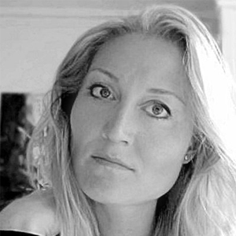

FORSIDE
BLOG
FOREDRAG
BIOGRAFI
MIN BOG
GALLERI
KONTAKT


Mit navn er Pernille Bernitt Sommer, og jeg er netop ved at færdiggøre en roman, hvor den israelske/palæstinensiske konflikt er omdrejningspunkt set med almindelige samfundsborger-øjne. Foredraget, som jeg i den forbindelse tilbyder, er derfor baseret på et personligt møde med et af verdens brændpunkter samtidig med, det belyser nogle af konfliktens centrale problematikker. Du kan læse mere om foredraget her.
Udover at holde foredrag og lægge sidste hånd på min roman arbejder jeg som mentor for universitetsstuderende, der har brug for hjælp til planlægning og strukturering af studieforløb og opgaver. Ligeledes er jeg rådgiver for en upcoming kunstner i forhold til at videreformidle stemninger og iagttagelser. I dette samarbejde ligger mit fokus på den fortælling, der ønskes fortalt.
Som violinist har jeg formidlet fra scenen, som grafisk designer gennem ord og billeder, og som kulturattaché har jeg formidlet kontakt på tværs af landegrænser kunstnere imellem. Som lærer har jeg undervist i folkeskolen, på privatinstitution samt på musik- og kulturskole, og som rejsende har jeg holdt foredrag. Næstefter mine rejser til Israel/Palæstina er favoritrejsemålet New York City, hvor den menneskelige diversitet er rig og dermed stimulerende, udviklende og fremfor alt inspirerende.
Udover det direkte arbejde med formidling har menneskets kompleksitet altid interesseret mig, hvorfor jeg igennem flere år har været mentor og vejleder for fysisk og psykisk udfordrede unge, hvis læring har bestået i at finde sig til rette i eget liv. At lægge mærke til og håndtere den historie, vi står midt i, kan være overvældende og udfordrende, men også udviklende og tilfredsstillende. Trods historiernes forskellighed har vi som mennesker det til fælles at befinde os i dem og ikke mindst det til fælles at skulle forholde os til deres nærvær. Jeg er optaget af disse historier, og har derfor valgt at samle på de af dem, jeg mener har relevans ikke kun for mig selv, men også for andre. Sagt på en anden måde handler min verden om at observere og agere, hvilket også er fundamentet for min foredragsvirksomhed.